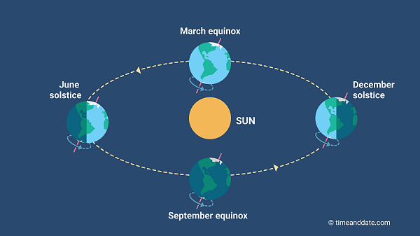

What are Seasons?

Seasons are marked by the Earth's position in relation to the sun — so when it's summer in the Northern Hemisphere, it's winter in the Southern Hemisphere. In temperate places, winter is cold, spring marks the birth of plants and animals, summer is warm, and in autumn temperatures get cooler again. You can also use season to mean "period of the year" or "time when a sport is played." As a verb, it means "add flavor.".